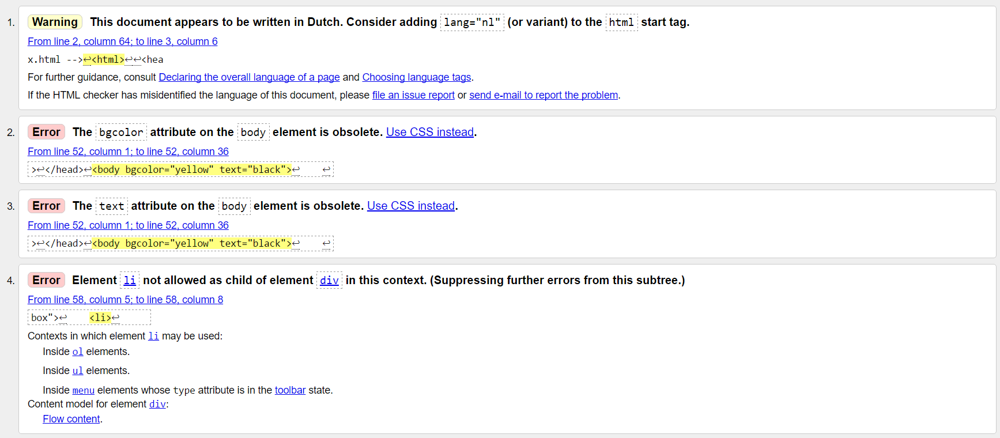
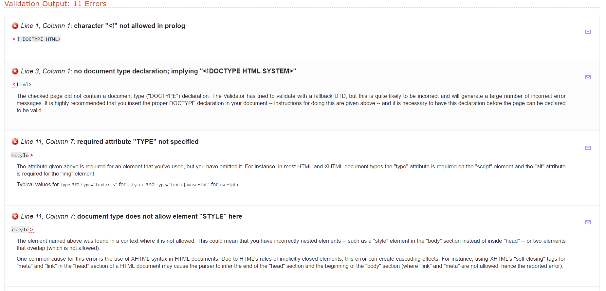
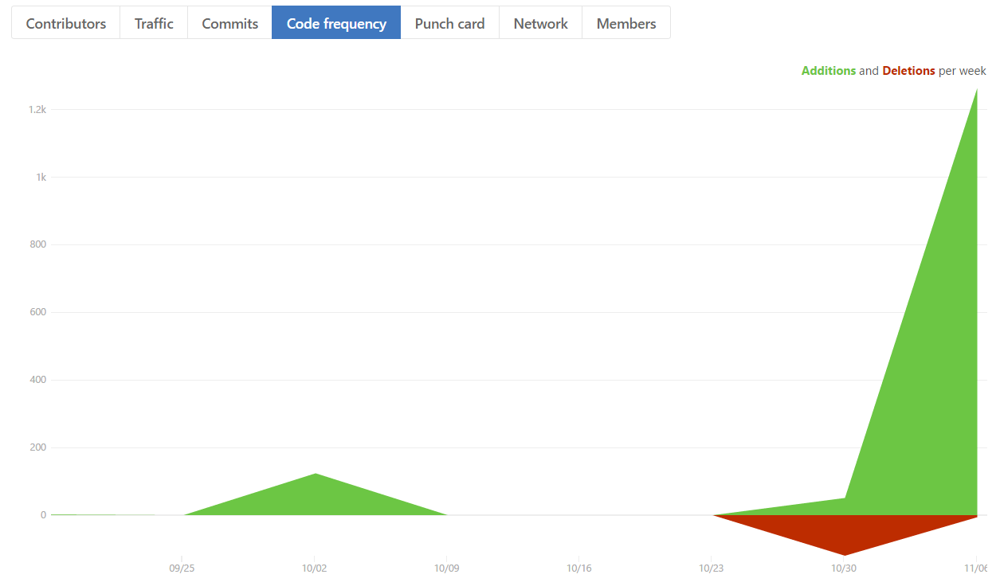
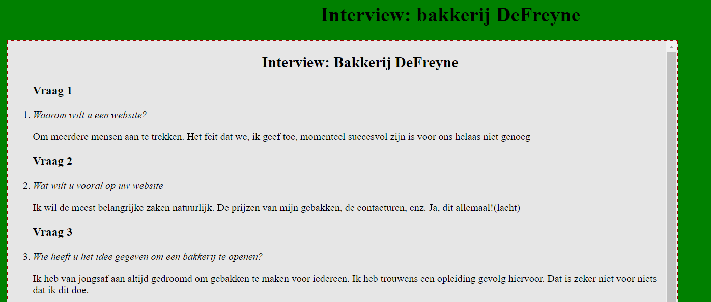

Bespreking repository Imad Kassou
Datum bespreking: 07/11/2016
Besproken door Robert Petre Comanici
Taken
Volledigheid
- De oefeningen en de lessen zijn meestal aangevuld.
- Er zijn nog dingen die op de foute plaats staan. De structuur is nog aanpasbaar maar de meeste opdrachten staan erin.
Juistheid
- Er zijn nog problemen met de code van les 2 en 3


- Er waren nog fouten maar de rest is beter. Ik heb ongeveer dezelfde validatiefouten en daarom denk ik dat delen van de code overgenomen is.
Extra moeite
- Geen extra moeite vind ik. Hij vermeldt in zijn logboek dat de logo extra is maar 1 logo is al van
een bestaand bedrijf en de andere is een een foto van Can Stock Photo en dit is geen extra werk vind ik. Hij heeft het niet zelf ontworpen.
- In de les bestanden vind ik ook geen extra moeite. Alles is zoals wij het in de klas hebben gedaan.
- Hij heeft wel de moeite gedaan om alle lessen in één dag aan te vullen.
Gebruik Github
- De meeste bestanden zijn in één dag geupload en ook aangevuld/gemaakt. Hij was niet regelmatig bezig met de commits.
- Hij heeft in de laatste week de meeste dingen aangevuld.
- 
Opmaak
- De meeste bestanden hebben een leesbare lay-out.
- De lay-out van de website voor de gekozen firma is niet aangepast. Er is geen CSS-bestand of CSS-code aanwezig.
- Voor zijn logboek en interview heeft hij wel nieuwe dingen gedaan zoals een tabel en een scroll. Die veranderingen zijn nog aanpasbaar voor een betere lay-out.

- De kleuren van zijn ontwerpen konden beter gekozen worden meet behulp van Paletton.
Score en feedback
Volledigheid goed (4)
Juistheid ok (3)
Extra moeite mager (2)
Gebruik Github mager (2)
Opmaak ok (3)
In het algemeen heeft Imad goed gewerkt. Hij was bezig tijndens de lessen maar hij had het moeilijk met het aanvullen en het gebruiken van zijn GitHub-repository. Het enige probleem was dat hij niet op tijd zijn mappen had aangevuld.
{kind=link}
{kind=link}